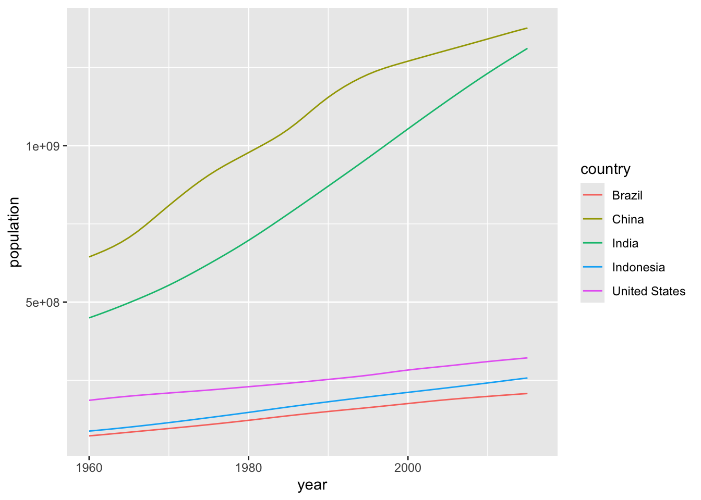
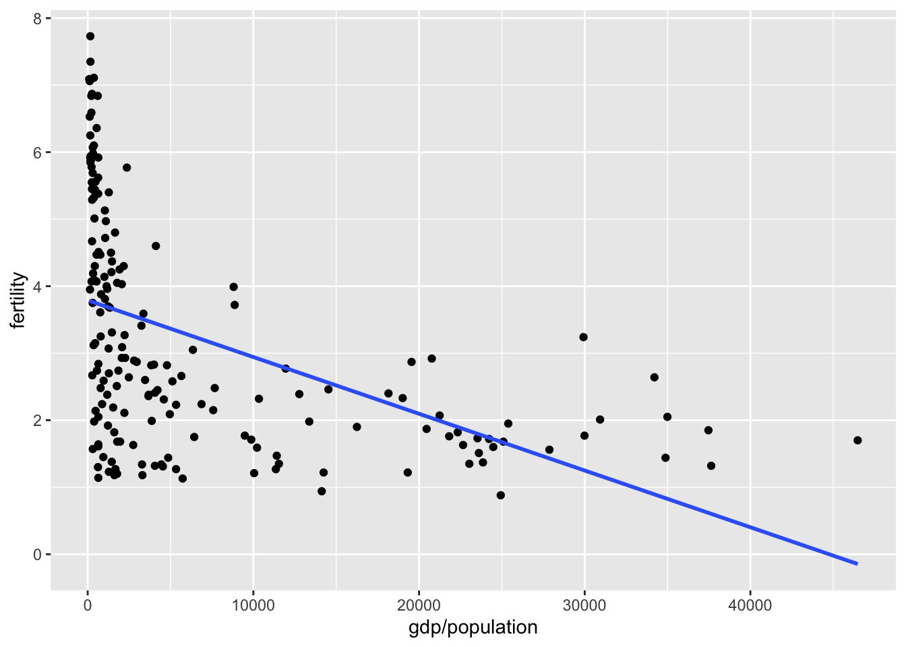
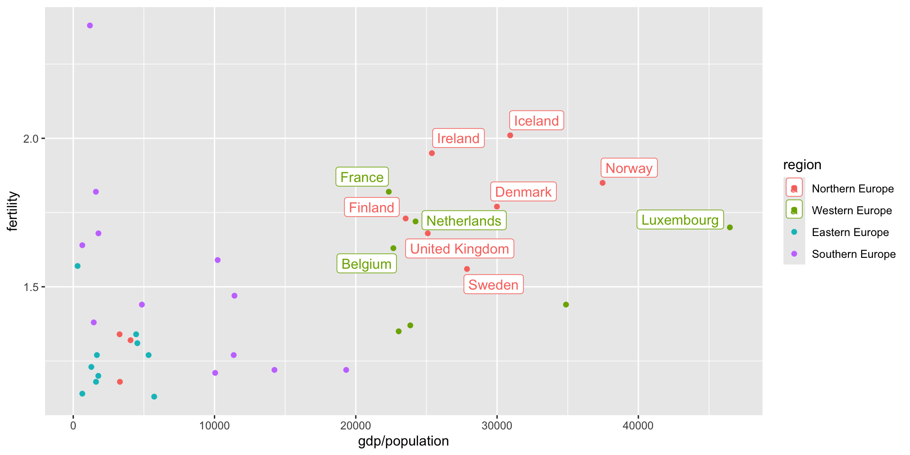
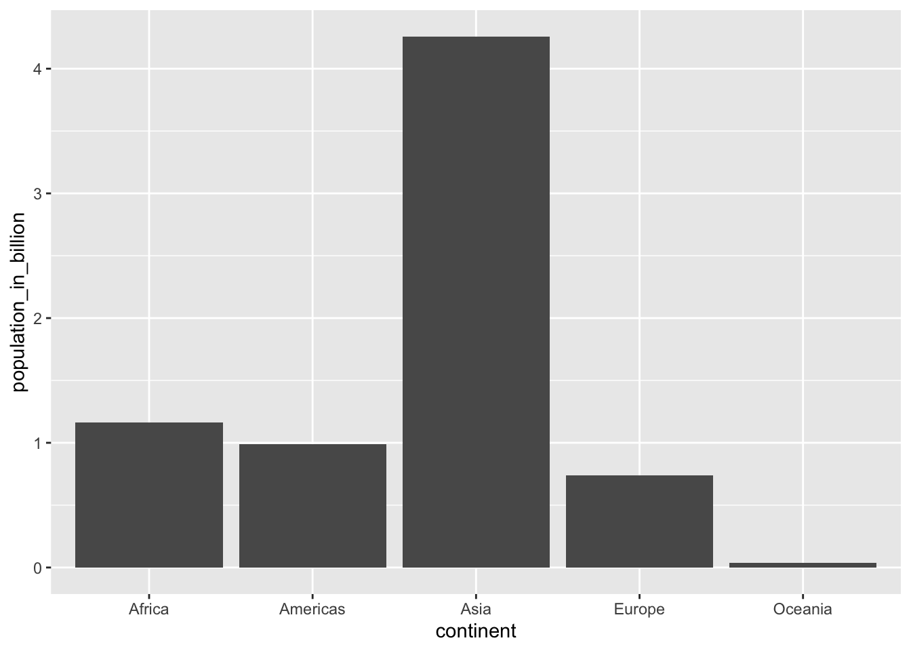
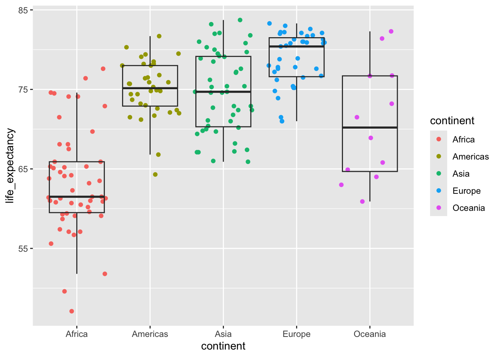
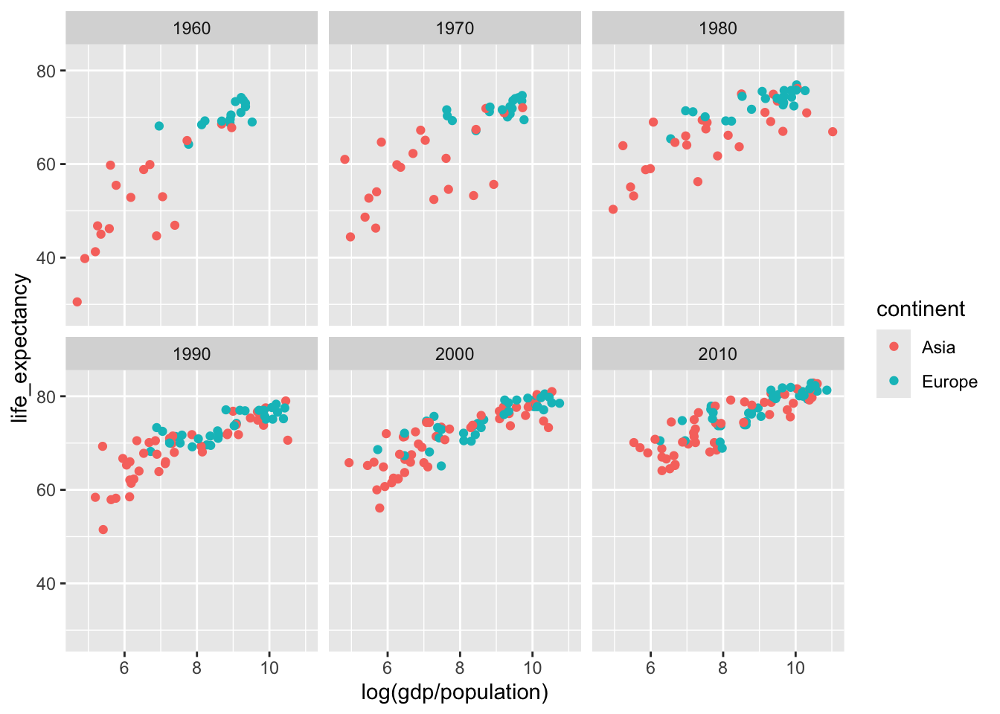
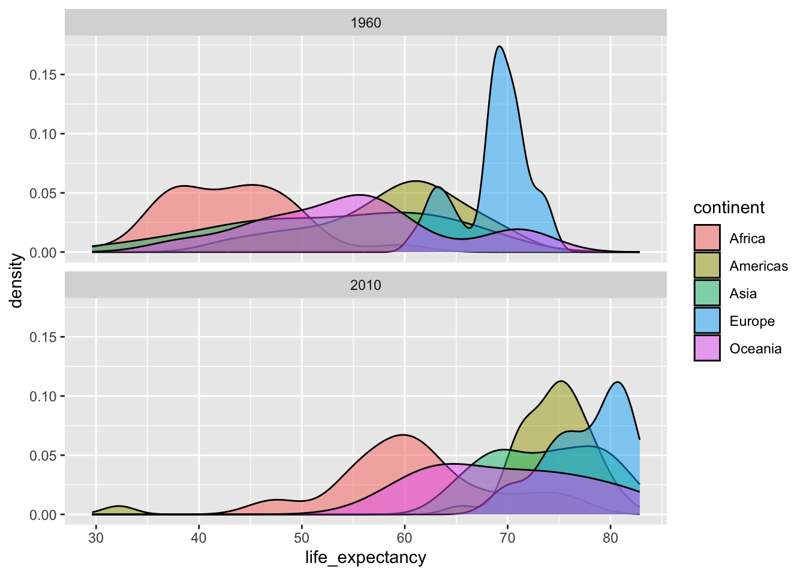
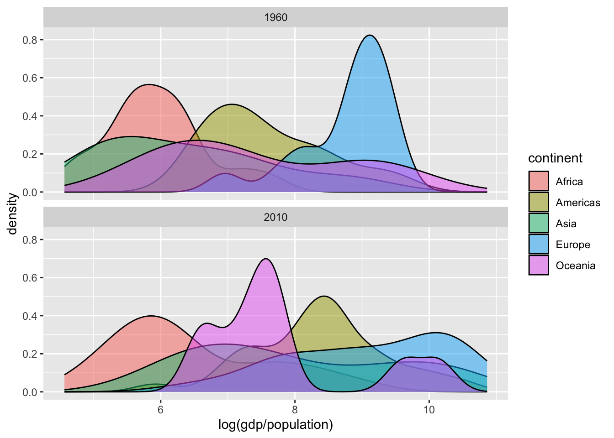
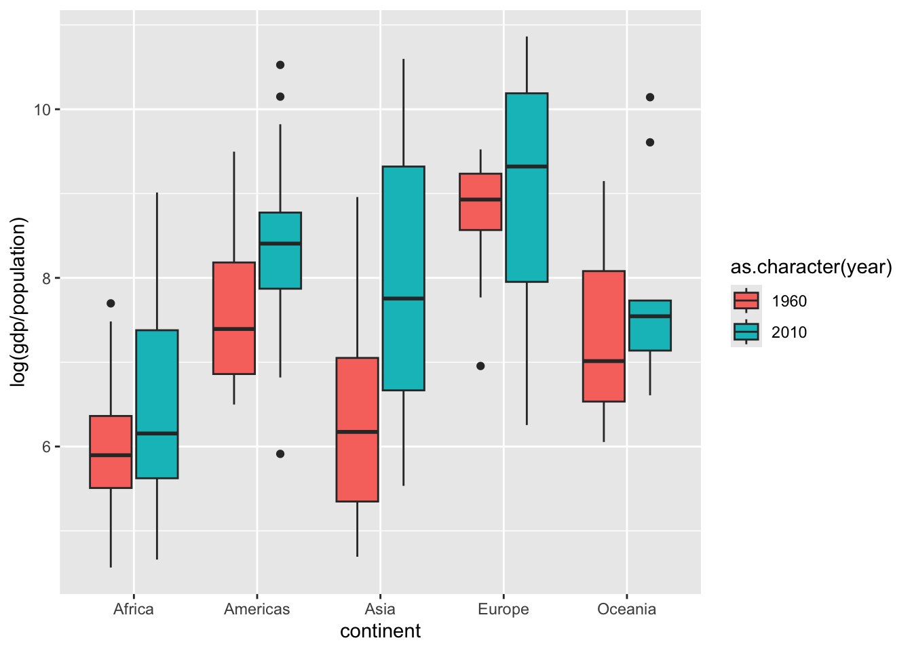

Lab 4: Data exploration with the gapminder dataset
Goals for today
Continue to practice data visualization with
ggplot2Continue to practice data transformation with
dplyrIntegrate 1) and 2) to explore the
gapminderdataset
General instructions
- Today, we’ll combine the powerful data transformation tools in
dplyrand the data visualization tools inggplot2to continue our visual exploration of global trends in public health and economics compiled by the Gapminder project.
- To start, first open a new RMarkdown file in your course repo, set the output format to
github_document, save it in yourlabfolder aslab4.Rmd, and work in this RMarkdown file for the rest of this lab.
- Now that you have learned how to subset data using different functions in
dplyr, we will work with the fullgapminderdataset provided in the R packagedslabs. Let’s start by installing thedslabspackage if you don’t have it installed already. Then, we need to load it with thelibrary()function. We also need to load thetidyversepackage because it contains ggplot.
library(tidyverse)
library(dslabs) #install.packages("dslabs")
# After you have loaded the dslabs package, you can access the data stored in `gapminder`. Let's look at the top 5 lines
gapminder %>% as_tibble() %>%
head(5)## # A tibble: 5 x 9
## country year infant_mortality life_expectancy fertility population gdp
## <fct> <int> <dbl> <dbl> <dbl> <dbl> <dbl>
## 1 Albania 1960 115. 62.9 6.19 1636054 NA
## 2 Algeria 1960 148. 47.5 7.65 11124892 1.38e10
## 3 Angola 1960 208 36.0 7.32 5270844 NA
## 4 Antigua … 1960 NA 63.0 4.43 54681 NA
## 5 Argentina 1960 59.9 65.4 3.11 20619075 1.08e11
## # … with 2 more variables: continent <fct>, region <fct>As a reminder, to get familar with this dataset, you might want to use functions like
View(),dim(),colnames(), and?. You will see that the dataset includes the following variables:- country
- year
- infant_mortality (infant deaths per 1000)
- life_expectancy
- fertility (average number of children per woman)
- population (per country)
- gpd (per country)
- continent
- region (geographical region)
Exercise 1: Use data transformation and visualization to answer the following questions in breakout rooms (45 min)
The mission of the Gapminder Project is to “fight devastating ignorance with a fact-based worldview everyone can understand”. Per their own description, Gapminder identifies systematic misconceptions about important global trends and proportions and uses reliable data to develop easy to understand teaching materials to rid people of their misconceptions.
Several of the questions posted below have been borrowed from their ignorance test
You may first answer these questions based on your intuition, and then use the gapminder dataset to verify if your intuition is correct, either with a summary table of the relevant statistics or with a visualization (ideally both!).
We provide one possible solution for each question, but we highly recommend that you don’t look at them unless you are really stuck.
Question 1: Which five countries had the largest population size in 2015 (the most recent year for which population sizes are included in this dataset), and how has the population sizes in those countries changes since 1960?
click to expand
# Extract a vector with the 5 countries with the largest population size
top5_countries <- gapminder %>%
filter(year == 2015) %>%
arrange(-population) %>%
select(country) %>%
head(5) %>%
pull()
gapminder %>%
filter(country %in% top5_countries) %>%
ggplot() +
geom_line(mapping = aes(x = year, y = population, color = country))## Warning: Removed 5 row(s) containing missing values (geom_path).
Question 2. Rank the following countries in infant mortality rate in 2015.
Turkey, Poland, South Korea, Russia, Vietnam, South Africa
click to expand
gapminder %>%
filter(year==2015, country %in% c("Turkey", "Poland", "South Korea", "Russia", "Vietnam", "South Africa")) %>%
arrange(infant_mortality) %>%
select(country, infant_mortality) %>%
knitr::kable()| country | infant_mortality |
|---|---|
| South Korea | 2.9 |
| Poland | 4.5 |
| Russia | 8.2 |
| Turkey | 11.6 |
| Vietnam | 17.3 |
| South Africa | 33.6 |
Question 3. What is the general relationship between per-capita GDP and fertility rate?
A. Positive relationship
B. Negetive relationship
C. No relationship
Hint: use the data from 2000
click to expand
gapminder %>%
filter(year==2000) %>%
ggplot(aes(y=fertility, x=gdp/population)) +
geom_point() +
geom_smooth(se=F, method = "lm")
Question 4. If you break down the relationship between per-capita GDP and fertility rate by continent, which continent (or regions) stands out as an outlier? (Bonus question: why might this be?)
A. Africa
B. Asia
C. Europe
Hint: use the data from 2000
click to expand
gapminder %>%
filter(year==2000) %>%
ggplot(aes(y=fertility, x=gdp/population, color=continent)) +
geom_point() +
geom_smooth(se=F, method = "lm") +
facet_wrap(~continent, scales = "free_y")eu_2000 <- gapminder %>%
filter(year==2000, continent == "Europe")
eu_2000 %>%
filter(fertility > 1.5, gdp/population > 20000) %>%
ggplot(aes(y=fertility, x=gdp/population, color=region)) +
ggrepel::geom_label_repel(aes(label=country)) +
geom_point(data=eu_2000)
Question 5. There are roughly seven billion people in the world today. Which map shows where people live? (Each figure represents 1 billion people.)

Hint: use the data from 2015
click to expand
gapminder %>%
filter(year==2015) %>%
group_by(continent) %>%
summarize(population_in_billion=sum(population)/10^9) %>%
ggplot(aes(x=continent, y=population_in_billion)) +
geom_col()
Question 6. What is the overall life expectancy for the world population (i.e. global average)?
A. 50 years
B. 60 years
C. 70 years
Hint: use the data from 2015
click to expand
gapminder %>%
filter(year==2015) %>%
summarize(life_expectancy=sum(life_expectancy*population)/sum(population))## life_expectancy
## 1 72.2457
Question 7. What is the gap in life expectancy between Europe and Africa?
A. 5 years
B. 15 years
C. 25 years
Hint: use the data from 2015
click to expand
gapminder %>%
filter(year==2015) %>%
group_by(continent) %>%
summarize(life_expectancy=sum(life_expectancy*population)/sum(population)) %>%
ggplot(aes(x=continent, y=life_expectancy)) +
geom_col()gapminder %>%
filter(year==2015) %>%
ggplot(aes(x=continent, y=life_expectancy)) +
geom_jitter(aes(color=continent),height = 0) +
geom_boxplot(alpha=0, outlier.alpha = 0)
Recap (10 minutes)
Share your findings, challenges, and questions with the class.
Short break (10 min)
Exercise 2: Use data transformation and visualization to explore the following open-ended question in breakout rooms (40 min)
This question is borrowed from the excellent Chapter 9 in Rafael A. Irizarry’s Introduction to Data Science book
Explore how much the gap in infant mortality, life expectancy, and per capita GDP between Western countries and the rest of the world have changed from 1960 to 2010.
Suggestions:
Visualizing the entire time series and taking certain snapshots of time (e.g. one data point every decade) can both be useful approaches.
The range in per capita GDP can be very high, with most countries having low values but a few countries having very high values, so a log transformation may be useful.
You can try different definitions of “Western countries” and the “rest of the world”.
You can also analyze different subgroups within the broad categorizations of “Western countries” and the “rest of the world” separately.
Try to explore different geometric objects. Line plot, scatter plot, density plot, box plot, bar plot, and others can all be useful.
click to expand
years <- c(1960, 1970, 1980, 1990, 2000, 2010)
continents <- c("Europe", "Asia")
gapminder %>%
filter(year %in% years & continent %in% continents) %>%
ggplot(aes(log(gdp/population), life_expectancy, col = continent)) +
geom_point() +
facet_wrap(~year) ## Warning: Removed 148 rows containing missing values (geom_point).
gapminder %>%
filter(continent %in% continents) %>%
ggplot(aes(x=year, y=life_expectancy, group=country)) +
geom_line()+
facet_wrap(~continent) gapminder %>%
filter(year %in% c(1960, 2010)) %>%
ggplot(aes(x=life_expectancy, fill=continent)) +
geom_density(alpha=0.5)+
facet_wrap(~year, nrow=2) 
gapminder %>%
filter(year %in% c(1960, 2010)) %>%
ggplot(aes(x=log(gdp/population), fill=continent)) +
geom_density(alpha=0.5)+
facet_wrap(~year, nrow=2) ## Warning: Removed 99 rows containing non-finite values (stat_density).
gapminder %>%
filter(year %in% c(1960, 2010)) %>%
ggplot(aes(continent, log(gdp/population), fill = as.character(year))) +
geom_boxplot()## Warning: Removed 99 rows containing non-finite values (stat_boxplot).
If you have more time:
Think of another interesting question you can answer with this dataset and explore different strategies for getting your answer.
Recap (10 minutes)
Share your findings, challenges, and questions with the class.
END LAB 3